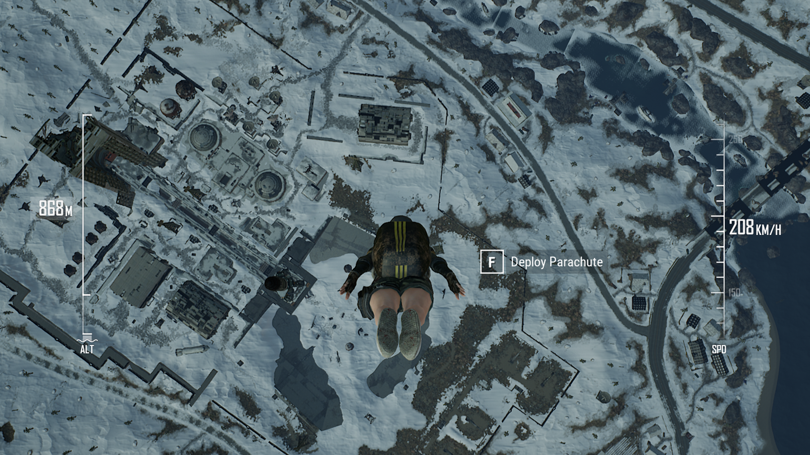

This update has a lot of exciting additions and balances. Tactical Map Markers have been added for better communication between Squad and Duo teams. We’ve added more spawn kit options in Custom Matches and Camp Jackal as a playable map in War Mode: Conquest. Our largest focus in this patch was rebalancing aspects of Vikendi. Following feedback on our first round of Vikendi rebalancing, we have tweaked the spawn rates to better equip players for long range fights.
In addition to info on the updates, with Survivor Pass 3: Wild Card winding down we’ve got details on how long you have to collect your XP and rewards, so definitely jump in there for the last few weeks and complete as many missions as you can.
We’ve got several new UI improvements and general Quality of Life improvements across the game. You can get all the details on the changes and additions made in Update #29 below.
Mid-Update Bugfixes
05/23/2019
Fixed an issue where killfeed messages appear inaccurate when a player is killed by frag grenades in certain conditions.
Fixed an issue where sometimes characters appear to be floating above the ground while running.
Fixed an issue where sometimes players located near the water do not receive damage from frag grenades exploding in the shallow water near them.
Survivor Pass 3: Wild Card
End-date of Survivor Pass 3: Wild Card
Survivor Pass 3: Wild Card will end on June 5th, when live servers enter maintenance.
You will have until June 26th to claim earned rewards and purchase items from the coupon shop. See the Grace Period section below for more information.
Premium Pass and Level Up Tickets can only be purchased and up until live server maintenance on June 5th.
Time remaining for the Survivor Pass will be displayed in-game for two weeks prior to the end-date.
When purchasing Survivor Pass Premium, players will be shown the pass end date to confirm whether they want to purchase the pass.
Results Summary
Once the Survivor Pass 3: Wild Card ends, you can view your achievements and detailed information about acquired rewards, levels achieved, and mission status on the results page.
Additional information:
You can check your achievement completion percentage for each mission type (Daily, Weekly, Beginner, Premium) from the Missions tab.
You can view the total amount of rewards acquired on the Rewards tab.
Grace Period
There will be a grace period for claiming rewards and XP once the Survivor Pass ends, from June 5 until June 26 (prior to Live Server maintenance).
Level-Up tickets cannot be used during the Grace Period (after the pass ends) but will remain in your inventory and available for use during future passes.
XP for completed missions can be claimed by using the Claim All button until June 26 (prior to Live Server Maintenance).
Coupon Shop will be open until June 26 (until Live Server maintenance).
Remaining coupons will expire once the Coupon Shop is closed.
Gameplay
Vikendi 2nd Rebalance
With this update we made Vikendi a more balanced sniper haven with increased long guns and the addition of the MK47 Mutant for that extra burst of firepower. Getting through all those snipers will be a bit easier with better cover, which the extra 4-wheel drive vehicles will provide better than snowbikes. Read on for more details about the Vikendi rebalance.
Blue zone adjustments
To support a wider variety of gameplay experiences around Vikendi, the initial safe zone will now be placed in more varied locations and the waiting time between certain blue zone phases has been reduced.
Phase 1 safe zone now spawns in more varied locations.
Waiting time between early and late blue zone phases has been decreased slightly.
Overall match duration subsequently reduced by 1 minute and 30 seconds.
Vehicle spawn rate adjustment
Vehicle spawn rate has been changed to facilitate the new blue zone settings.
Increased four-wheel drive vehicle spawn ratio in relation to Snowbikes and Snowmobiles.
Item spawn rate adjustment
We have adjusted weapon spawn rates to help facilitate more medium and long-range engagements. Adjustments to available attachments have also been made to offer players more options.
Adjustments to item spawns on Vikendi:
AR spawns increased by 1.4x
DMR spawns increased by 2x
SR spawns increased by 7x
SMG, Shotgun, Pistol Crossbow and spawns have been decreased slightly.
Attachment spawns have been increased slightly.
High powered scope spawns have been increased slightly.
Cave balance adjustment
Since the Secret Cave is no longer much of a secret, we have adjusted the loot within to balance it more closely to other areas of Vikendi to improve the gameplay experience, while still offering good loot.
Care Packages will no-longer spawn in the cave.
High quality non-crate loot will still spawn in this location.
Increased variety of items spawned in the cave.
Item pool changes
Added MK47 Mutant, Halfgrip, Thumbgrip and Laser Sight.
Removed Win94 and R45.
Increased Moonlight weather condition percentage.
General Gameplay
Grenades can no-longer be thrown through wire mesh (most notably, wire fences)
Tactical Map Markers
Added new Tactical Map Markers with 6 different marker types for different situations (Attack, Danger, Defend, Loot, Regroup, Vehicle).
To use the markers, open the world map and hold right click to reveal the Tactical Map Marker wheel, then move to the desired icon then release.
Each player can only place one Tactical Map Marker or Standard marker at a time.
Tactical Map Markers will be shown on the world map, minimap, and compass in the same way as the existing map markers.
Throwables Crosshair Improvement
Added new crosshair when using throwables to easily identify the use of overarm or underarm throwing stance.
Minimap improvements
Teammates outside of your immediate minimap area will now have their icon and status shown at the at the edge of the minimap. This will help more easily identify the direction and status of your teammates.
Parachuting UI Improvements

The parachute UI has been improved, made more visible and divided into two gauges, one for current speed and the other a more detailed altitude gauge.
Improved teammate status UI
An icon has been added to show when teammates are freefalling from the plane.
Teammates’ status icons during the parachuting phase which were previously only shown on the map, are now also shown at the bottom left of the screen alongside the other teammate UI.